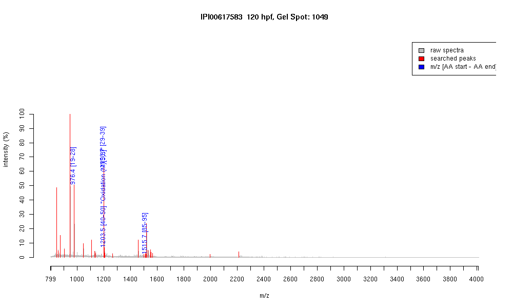

| Name | PREDICTED: similar to beta-cytoplasmicactin2 isoform 3 |
|---|---|
| MW | 14107 |
| PI | 5.45 |
| Mascot Protein Score | 71 |
| Masses (matched / unmatched) | 4 / 26 |

| Peptide | MZ (calc) | MZ (observed) | Error (DA) | Error (PPM) | Start | Stop | Modifications |
|---|---|---|---|---|---|---|---|
| AGFAGDDAPR | 976.4482 | 976.4491 | 0.0009 | 1 | 19 | 28 | |
| AVFPSIVGRPR | 1198.7054 | 1198.702 | -0.0034 | -3 | 29 | 39 | |
| HQGVMVGMGQK | 1203.5609 | 1203.5444 | -0.0165 | -14 | 40 | 50 | "Oxidation (M)[5,8]" |
| IWHHTFYNELR | 1515.7491 | 1515.7354 | -0.0137 | -9 | 85 | 95 |